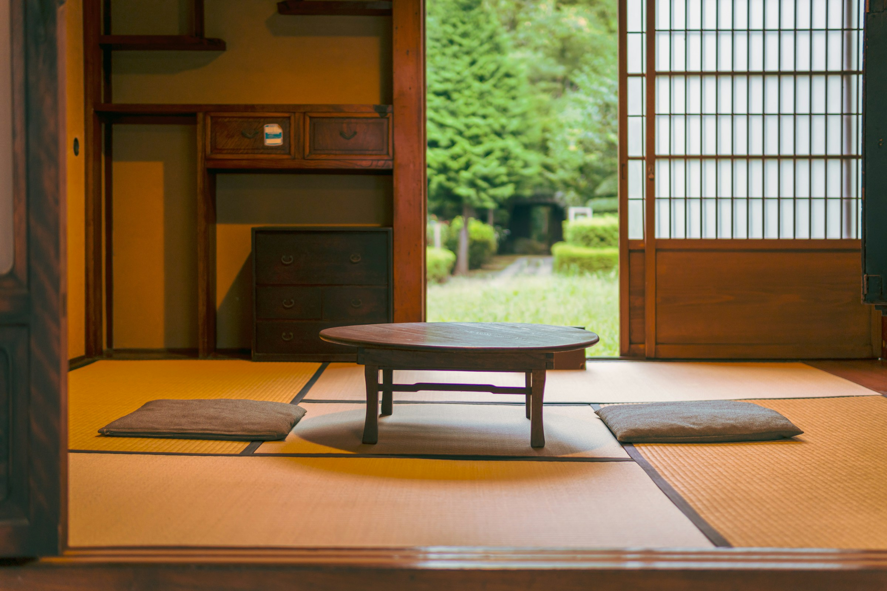
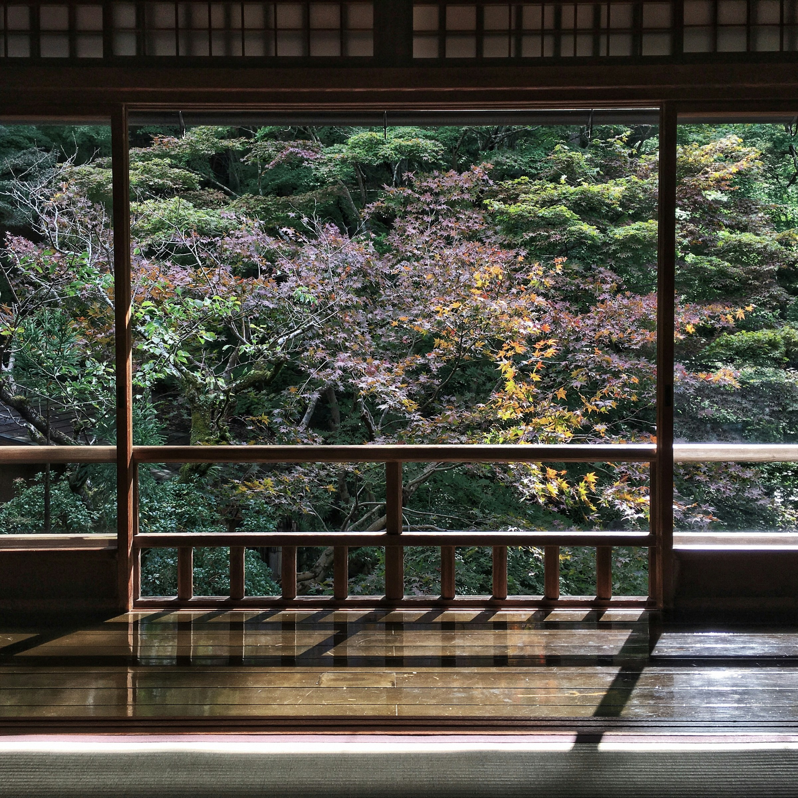
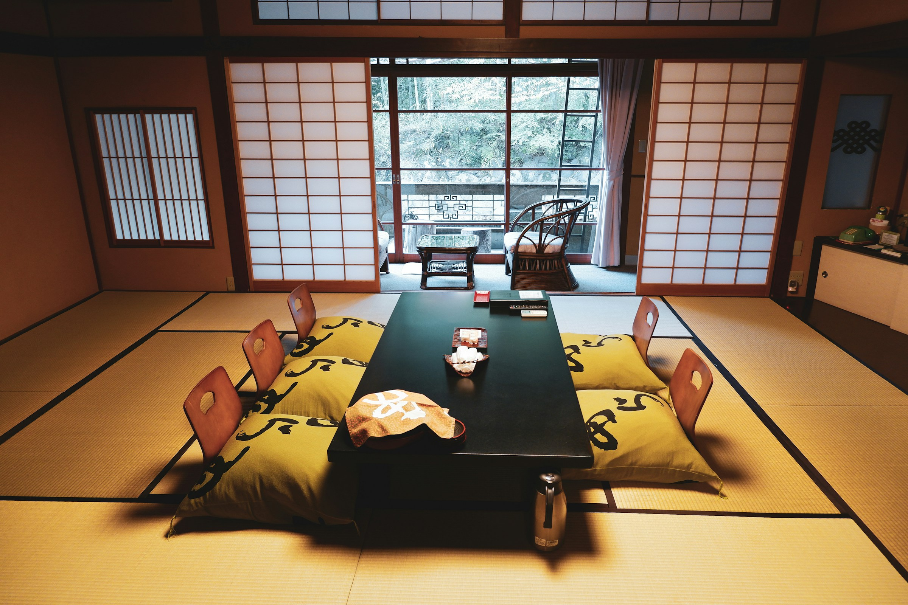
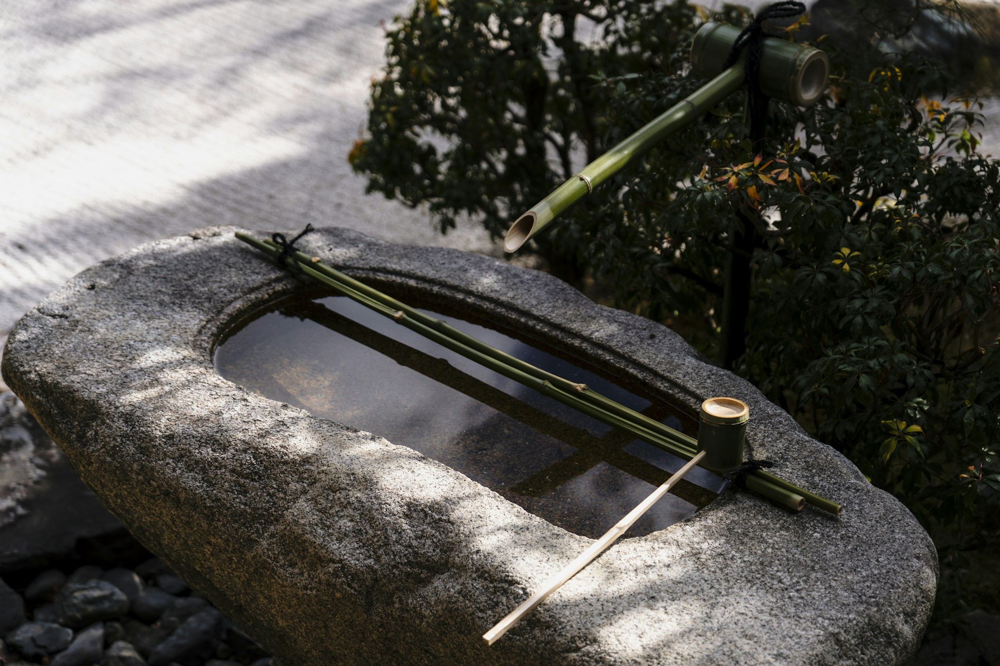

漣 -sazanami-
The Sazanami Suite
The Sazanami Suite
いちばん小さな波の名を、最も大きな部屋に。The smallest wave gives its name to the largest room.
漣スイートは、島の南端、岬の先に建つ離れです。The Sazanami Suite is a detached pavilion at the southern tip of the island, built out on a cape.
寝室、居間、書斎、湯、そして桟橋までを含む80㎡。寝室の大窓は南向き、朝陽は東のテラスから、夕陽は西のテラスから。80 sqm, including bedroom, living room, study, bath, and a private pier. The bedroom window faces south; sunrise comes from the east terrace, sunset from the west.
専用の桟橋から、漣のスタッフがお客様だけのボートを出します。日没から夜明けまで、ほかの誰の気配も届きません。From the private pier, our staff send out a boat for you alone. From sunset to dawn, no other presence reaches you.



Specifications
部屋のしつらえRoom appointments
漣スイートは2室のみ。岬の突端に独立した離れ棟として建つため、ほかの客室・通路・館内動線とは完全に切り離されています。Only two Sazanami Suites exist. Standing alone on the cape, they are completely separated from any other room, hallway, or service path.
| Area | 80㎡ |
|---|---|
| Capacity | 2名 |
| Bed | キング1台 |
| Bath | 檜の露天風呂、内湯 |
| Terrace | 専用テラス2面（朝陽・夕陽） |
| Other | 専用桟橋、書斎、ライブラリ |
| Rooms | 2室 |


Reservation
漣スイートを、予約する。Reserve the Sazanami Suite.
Reserve The Sazanami Suite